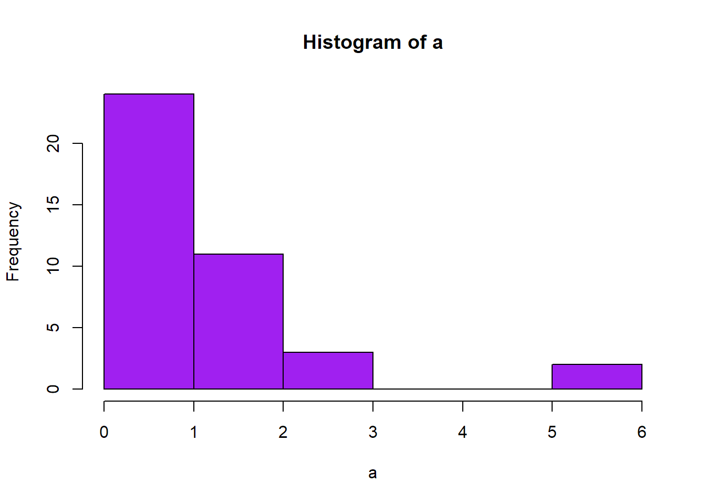

# Example "for" loop
for (i in 1:10) {
print(i)
}1 Introduction
This practical will introduce the concept of bootstrapping for both descriptive and inferential statistics. Along the way, we will learn about a very useful feature in programming languages: loops! These allow us to repeat tasks multiple times, and increase the efficiency of our work.
For the first part of this practical, we will simulate some data. This is a useful thing to be able to do as it allows us to compare our bootstrapped results to the “true mean” we used to generate our data. In the second part, we will use a real dataset from a study of wellbeing in pregnancy. We’ll introduce that later on!
Learning objectives
As a reminder, this week’s learning objectives are to:
- Explain the role and utility of stochastic methods in statistical analysis
- Outline the logic and procedure of bootstrapping
- Describe how the non-parametric bootstrap avoids distributional assumptions
- Apply bootstrap techniques to estimate a range of statistical parameters
- Relate these core principles to a variety of statistical tasks
2 Introduction to loops
Loops are a way of getting a computer to do something lots of times. There are two main types of loop: for loops that complete a task a fixed number of times, and while loops that continue until one or more conditions are met.
Before you begin, complete the usual set-up steps so that you have somewhere to save your notes. Open your ARM_Practicals.Rproj file, then create a new script called ARM5_Stochastic.R. Save it in the usual scripts/ folder.
2.1 For loops
A for loop increments a variable each time around the loop, for a set number of repetitions. Here is the simplest possible for loop—what do you think it does?
Add this code to your script and execute it. You should get a list of the numbers 1 to 10 in the console. What’s happening here is that we’re telling the computer to increment the variable i, starting at 1 and continuing to a value of 10. Each time round the loop, the commands inside the {curly brackets} are repeated. In this case, we’re just printing the value of i to the console.
We can scale this up to do more complex things. For example, we could generate some random numbers and put their mean into a list. To do this, we first need to create a vector to store the output. Then, through each iteration of the loop, we calculate the mean of 20 randomly generated numbers and store it in the i-th entry of the vector.
# Create an empty vector to store output
mean_list <- NULL
# In each of 10 runs through the loop
for (i in 1:10){
# Generate 20 random numbers from a normal distribution
random_n <- rnorm(20)
# Calculate the mean
mean_val <- mean(random_n)
# Store the mean value in the corresponding (i) vector entry
mean_list[i] <- mean_val
}
# Print the output
mean_listRun this section of code: you should see it outputs a list of means, and that you now have this list of means stored in your R environment. This simple process can be very useful for bootstrapping and other stochastic methods.
Coding tip!
Note that we wrote each step out in full in the above loop to illustrate each step in turn. However, the programming whizzes amongst you might spot that we could have written the contents of the loop much more concisely. We could nest the data generation function inside the mean function and assigning it directly to the output vector: mean_list[i] <- mean(rnorm(20)). Brackets are interpreted from the inside out, so the rnorm() data generation is completed before the mean() is computed on it.
Either option is fine: coding concisely versus in clear readable steps can each be better in different situations.
2.2 While loops
An alternative then is the while loop. Instead of running for a fixed number of times, the loop terminates only when a certain condition is met. Here is a very simple example:
# Start with i = 0
i <- 0
# Example "while" loop
while (i < 10){ # providing i is less than 10
i <- i + 1 # increase i by 1
print(i) # print new value of i
}This does exactly the same as the first for loop example: it repeats ten times, increasing the value of i each time and printing it out. Although it takes more lines of code, it can be used in interesting ways.
Try modifying the code above so that instead of increasing by a fixed value, it adds a random number generated from a normal distribution. The rnorm() function will help you do this. How many times do we go round the loop when the mean of the normal distribution is 0, versus when it is 0.5?
Show the code
# Modified version 1: Mean = 0
i <- 0 # start with i = 0
while (i < 10){ # providing i is less than 10
i <- i + rnorm(1, mean = 0) # increase i by random number
print(i) # print new value of i
}
# Modified version 1: Mean = 0.5
i <- 0 # reset start to i = 0
while (i < 10){ # providing i is less than 10
i <- i + rnorm(1, mean = 0.5) # increase i by random number
print(i) # print new value of i
}3 Bootstrapping a mean
Now that you understand the basics of loops, let’s use them to bootstrap the mean of some data.
3.1 Generate skewed data
First, let’s create some simulated data to work with. This is useful for understanding how things work as we can control the properties of the data ourselves1. In this case, we’ll make sure that the data are not normally distributed by generating them from an exponential distribution.

We can do this using the rexp() function. Find out how it works by typing help(rexp). Then create a variable, a, with 40 samples (n) from this distribution, leaving the default rate parameter as 1.
Plot a histogram of your simulated dataset using hist(a), and calculate the true mean. This will be slightly different to the person next to you, as you each generated a random sample from scratch.
3.2 Run the bootstrapping
Now let’s resample the mean many times in a loop. Start by creating an empty variable to store the means in. Let’s call it all_means:
all_means <- NULLThen create a for loop that will repeat 1000 times. Inside the loop, we need to do two things as follows:
# Resample with replacement from the synthetic data (a)
b <- sample(a, replace = TRUE)
# Calculate the mean of the resampled data, and store it in all_means
all_means[i] <- mean(b) Embed the two lines in your loop to achieve the resampling.
Create a histogram of the all_means vector using the hist() function. Note that it is normally distributed, despite the underlying data coming from a non-normal distribution. We can get R to work out the 95% confidence intervals using the quantile function:
ci <- quantile(all_means, c(0.025, 0.975))Print the values of ci. These are the bootstrapped 95% confidence intervals of the mean.
Try running through the loop and this line several times (but with the same starting sample of data). What do you notice?
4 Bootstrapping a linear regression
When we perform linear regression, we get a single straight line passing through some data points (y = intercept + bx). But what if we want to estimate the confidence limits of this regression slope? One way to do this is to resample the data, and perform a separate regression on each resampled dataset. Then we can obtain confidence limits on any coefficient that we choose.
4.1 Introducing the data
This week we will work with data from Dr Catherine Preston’s research group. Dr Lydia Munns (a former PhD student in the department) was interested in how bodily experiences during pregnancy are associated with wellbeing. They administered several questionnaires to >200 pregnant women, including body dissatisfaction and depression which we will look at today. If you’re interested in this topic, you can access the full paper here.
Download the data from the VLE page for this practical, and save it in your data/ folder as usual. Read it into R:
bumps_dat <- read.csv("./data/ARM5_data_bumps.csv")Inspect the dataset. You should see we have the following variables:
- body_diss: body dissatisfaction, as measured by the Body Understanding Measure for Pregnancy Scale (BUMPs)
- anxiety: anxiety, as measured by the Hospital Anxiety and Depression Scale
- depression: depression, as measured by the Hospital Anxiety and Depression Scale
We will just use the depression scores today, but anxiety scores are retained in the dataset in case you later want to apply what you learn to a new example.
4.2 Run a linear regression
The authors were interested in how body dissatisfaction during pregnancy predicted depression scores. Fit a simple linear model as follows, then call summary() on the fitted object to inspect the output.
# Fit a linear model
bumps_lm <- lm(depression ~ body_diss, data = bumps_dat)The intercept and slope of the regression model are stored in the output variable, which you can access in a more direct way using bumps_lm$coefficients. You can select the slope for body dissatisfaction specifically using bumps_lm$coefficients["body_diss"]. Run this now and store the entry in your environment as true_slope, it should have the value ~0.09. This means that every unit increase in the body dissatisfaction scale is associated with a ~0.1 increase on the depression scale.
We can also use these extracted coefficients to plot a regression line on a scatterplot. Try running the following code, and inspecting the figure in the Plots window:
library(ggplot2)
# Create scatterplot
ggplot(bumps_lm, aes(x = body_diss, y = depression)) +
theme_bw() + # black and white theme
geom_point() + # data points
geom_abline(intercept = bumps_lm$coefficients["(Intercept)"], # model regression
slope = bumps_lm$coefficients["body_diss"])We loaded ggplot2 here as one of the most widely used data visualisation packages in R. It comes as part of the tidyverse set that we have loaded in other practicals. This code specifies the dataframe we want to use for plotting (bumps_lm), and the x and y variables we want to aesthetically map on the plot. With this as a foundation, we specify a black and white theme, add points to represent the raw data, then a line with the intercept and slope values taken from the fitted model object.
4.3 Compute bootstrapped 95% CIs on the intercept and slope
To do the bootstrapping, we need to sample the rows from the dataframe, so that the relationship between variables is preserved (i.e., the correct pairings between each participant’s scores). To do this, we create an index variable that contains the same number of entries as there are rows of the dataframe:
# Create data index for resampling
index <- 1:nrow(bumps_dat)Now create a loop to perform 1000 bootstrap samples. Within each iteration, you will need to create a resample_index by resampling the index variable (just as we did when resampling values earlier).
You can then use the resampled variable you have created to extract the corresponding rows from the dataset as follows:
# Use resampled index to generate data based on row numbers
resample_dat <- bumps_dat[resample_index,]On each iteration, repeat the regression with the sampled data and store the slope in a vector (as we did for bootstrapping means).
Once you have run the bootstrapping, use the quantile() function to calculate 95% confidence intervals. These should be approximately [0.07, 0.14].
Show the code
# Create data index for resampling
index <- 1:nrow(bumps_dat)
# Create vector to store slopes
all_slopes <- NULL
# For each of 1000 iterations
for (i in 1:1000){
# Resample the row numbers
resample_index <- sample(index, replace = TRUE)
# Use the resample row numbers to select rows from the dataset
resample_dat <- bumps_dat[resample_index,]
# Run a new linear regression model on the resampled data
new_mod <- lm(depression ~ body_diss, data = resample_dat)
# Extract and store new slope value
all_slopes[i] <- new_mod$coefficients["body_diss"]
}
# Calculate 95% confidence intervals from distribution of slopes
quantile(all_slopes, c(0.025, 0.975))If you have time, see if you can add these new slopes to your figure. You might wish to change the linetype or colour of your new lines so that your confidence intervals are distinguished from your original slope. ggplot2 is a very flexible tool with lots of opportunities for customising your plots, so you can have fun trying to make your figure look more visually appealing by googling what you wish to change.
5 Summary
Loops can be tricky to get your head around but mastering them opens the gateway to fast and efficient coding for a whole range of purposes. We have used them to understand the nuts and bolts of bootstrapping. Implementing this process manually helps us to understand what’s really happening behind the scenes, and allows us to apply this technique flexibly to almost any statistical procedure.
5.1 Challenge yourself
In standard cases, we might prefer to take “shortcuts” and use pre-programmed functions in R. Try using Google to see what packages already exist for bootstrapping. Can you get them up and running using online resources?
Alternatively, you could repeat the steps today in analysing the anxiety variable, and expand the code to calculate the bootstrapped intercept and slopecoefficient.
5.2 Further learning
This week’s core reading is on the VLE. If you want to gain more interactive experience of sampling in R, there is a great DataCamp course on this topic.
How’s it going?
Let us know how today went via this quick survey - rate the difficulty and length, and leave any comments that would help for us to know (positive comments welcome too!). You will need to be logged in with your university account to respond, but your submission will be anonymous.
For more general questions about the practical, please post them on the VLE Discussion Board.
Footnotes
There’s also some kind of “meta” lesson here in using random number generators to learn about random methods.↩︎